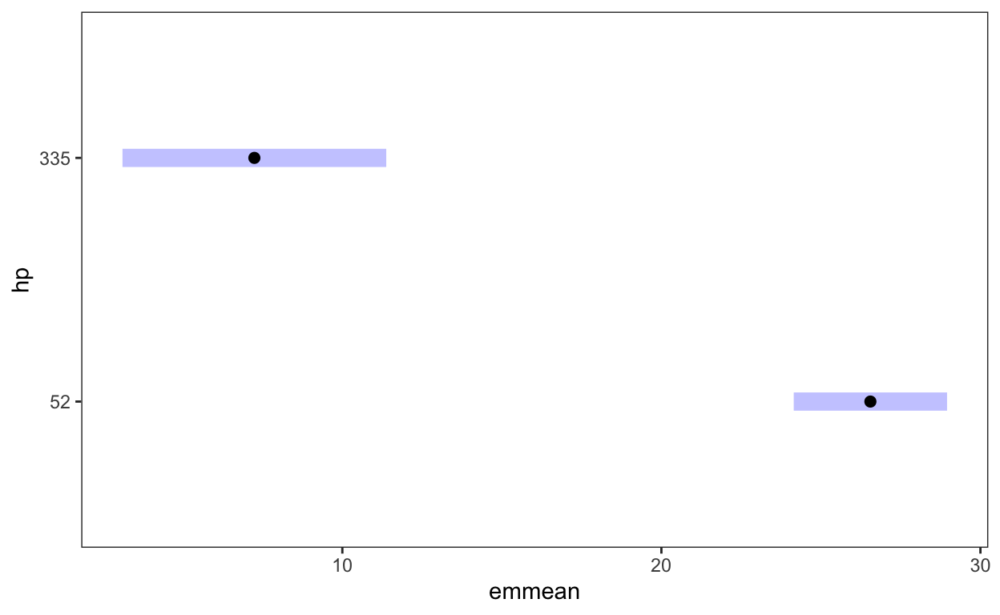
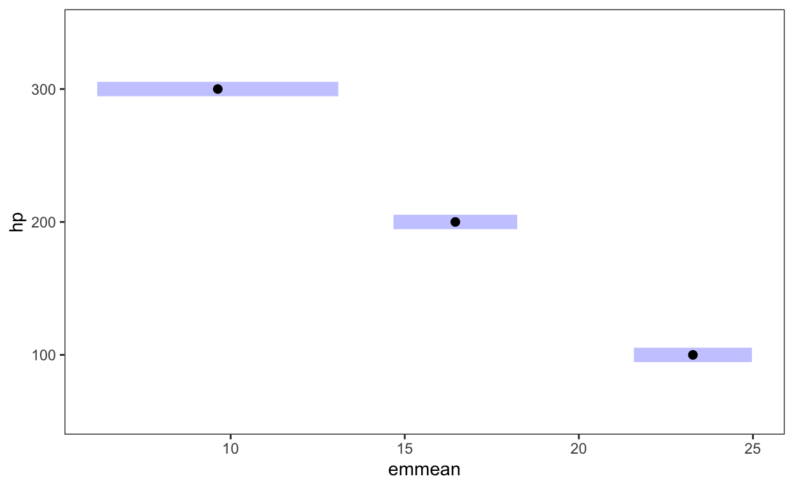

Why do we need {emmeans}?
Understanding “emmeans”
“emmeans” is an abbreviation for estimated marginal means. And in a linear regression it calculates means of a numeric predictor. However, since it also calculates probabilities, counts etc., the name - {emmeans} is, I think, just an artifact from the old times, where this package wasn’t that powerful.
“estimated” is part of the name, since any results of {emmmeans} is estimated from models, not from data
“marginal” - could be seen as average of averages. In a contingency table, the “marginal means” of one variable are the means for that variable averaged across every level of the other variable. For example, a marginal mean of mpg for cyl = 4 is 25.4 averaged over 0 and 1 levels of “am”. The same is with a average of mpg for am = 0, which is 19, which was averages over the means of all three types of cylinders.
d <- mtcars %>%
mutate(cyl = factor(cyl),
am = factor(am),
gear= factor(gear))
with(d, tapply(mpg, list(cyl, am), mean)) %>%
addmargins(FUN = mean)Margins computed over dimensions
in the following order:
1:
2: 0 1 mean
4 22.900 28.07500 25.48750
6 19.125 20.56667 19.84583
8 15.050 15.40000 15.22500
mean 19.025 21.34722 20.18611This is called reference grid:
- For each predictor that is a factor, use its levels.
- For each numeric predictor (covariate), use its average
Estimated marginal means.Once the reference grid is established, we can consider using the model to estimate the mean at each point in the reference grid.
But that’s just an example, let’s take it slowly one step at the time
1. one categorical predictor
m <- lm(mpg ~ cyl, d)
library(sjPlot) # I made a video on this 📦
plot_model(m, type = "pred")$cyl
ref_grid(m)'emmGrid' object with variables:
cyl = 4, 6, 8emmeans::emmeans(m, pairwise ~ cyl)$emmeans
cyl emmean SE df lower.CL upper.CL
4 26.7 0.972 29 24.7 28.7
6 19.7 1.218 29 17.3 22.2
8 15.1 0.861 29 13.3 16.9
Confidence level used: 0.95
$contrasts
contrast estimate SE df t.ratio p.value
cyl4 - cyl6 6.92 1.56 29 4.441 0.0003
cyl4 - cyl8 11.56 1.30 29 8.905 <.0001
cyl6 - cyl8 4.64 1.49 29 3.112 0.0112
P value adjustment: tukey method for comparing a family of 3 estimates 2. one numeric predictor
m <- lm(mpg ~ hp, d)
plot_model(m, type = "pred")$hptab_model(m)| mpg | |||
|---|---|---|---|
| Predictors | Estimates | CI | p |
| (Intercept) | 30.10 | 26.76 – 33.44 | <0.001 |
| hp | -0.07 | -0.09 – -0.05 | <0.001 |
| Observations | 32 | ||
| R2 / R2 adjusted | 0.602 / 0.589 | ||
ref_grid(m)'emmGrid' object with variables:
hp = 146.69emmeans(m, ~ hp) hp emmean SE df lower.CL upper.CL
147 20.1 0.683 30 18.7 21.5
Confidence level used: 0.95 Altering the reference grid
while an average mpg estimate per cyl category is nice, a single average mpg for a single average predictor value hp is not that informative, however, if we use at least two of them, for example the lowest and the highest, we see the slope we see on the plot and see why it is significant, it differst a lot.
ref_grid(m, cov.reduce = range)'emmGrid' object with variables:
hp = 52, 335emmeans(m, ~ hp, cov.reduce = range) hp emmean SE df lower.CL upper.CL
52 26.55 1.18 30 24.15 29.0
335 7.24 2.02 30 3.11 11.4
Confidence level used: 0.95 
moreover, instead of a range we can specify any particular values of predictor
'emmGrid' object with variables:
hp = 100, 200, 300 hp emmean SE df lower.CL upper.CL
100 23.28 0.83 30 21.58 25.0
200 16.45 0.87 30 14.68 18.2
300 9.63 1.70 30 6.17 13.1
Confidence level used: 0.95 
which can be very useful for non-linear models. Let me show you an example, if we have a closer look at the data, we’ll notice a non-linear, namely quadratic, pattern. plot_model(m, type = “pred”, show.data = T)
which we can depict using second polynomial degree:

the significance of both degrees tells us that we are right
tab_model(m1)| mpg | |||
|---|---|---|---|
| Predictors | Estimates | CI | p |
| (Intercept) | 20.09 | 18.98 – 21.20 | <0.001 |
| hp [1st degree] | -26.05 | -32.34 – -19.75 | <0.001 |
| hp [2nd degree] | 13.15 | 6.86 – 19.45 | <0.001 |
| Observations | 32 | ||
| R2 / R2 adjusted | 0.756 / 0.739 | ||
now we can use three particular values to take three slices of hp and since the CIs of two last would overlap, we can can assume those are not different.
using emmeans and “specs” argument, we can compare those emmeans and see that there is no difference between hp = 200 and 300
$emmeans
hp emmean SE df lower.CL upper.CL
100 23.3 0.662 29 21.9 24.6
200 14.6 0.820 29 12.9 16.3
300 14.3 1.735 29 10.7 17.8
Confidence level used: 0.95
$contrasts
contrast estimate SE df t.ratio p.value
hp100 - hp200 8.71 0.919 29 9.477 <.0001
hp100 - hp300 9.00 1.945 29 4.626 0.0002
hp200 - hp300 0.29 1.728 29 0.168 0.9846
P value adjustment: tukey method for comparing a family of 3 estimates 3. two categorical predictors without interactions
Results are averaged over the levels of: am
emmeans::emmeans(m, pairwise ~ cyl)$emmeans
cyl emmean SE df lower.CL upper.CL
4 26.1 0.972 28 24.1 28.1
6 19.9 1.165 28 17.5 22.3
8 16.0 0.943 28 14.1 17.9
Results are averaged over the levels of: am
Confidence level used: 0.95
$contrasts
contrast estimate SE df t.ratio p.value
cyl4 - cyl6 6.16 1.54 28 4.009 0.0012
cyl4 - cyl8 10.07 1.45 28 6.933 <.0001
cyl6 - cyl8 3.91 1.47 28 2.660 0.0331
Results are averaged over the levels of: am
P value adjustment: tukey method for comparing a family of 3 estimates contrasts are identical, but emmeans not
$emmeans
cyl emmean SE df lower.CL upper.CL
4 24.8 1.323 28 22.1 27.5
6 18.6 1.288 28 16.0 21.3
8 14.7 0.842 28 13.0 16.5
Confidence level used: 0.95
$contrasts
contrast estimate SE df t.ratio p.value
cyl4 - cyl6 6.16 1.54 28 4.009 0.0012
cyl4 - cyl8 10.07 1.45 28 6.933 <.0001
cyl6 - cyl8 3.91 1.47 28 2.660 0.0331
P value adjustment: tukey method for comparing a family of 3 estimates $emmeans
cyl emmean SE df lower.CL upper.CL
4 27.4 0.992 28 25.3 29.4
6 21.2 1.378 28 18.4 24.0
8 17.3 1.383 28 14.5 20.1
Confidence level used: 0.95
$contrasts
contrast estimate SE df t.ratio p.value
cyl4 - cyl6 6.16 1.54 28 4.009 0.0012
cyl4 - cyl8 10.07 1.45 28 6.933 <.0001
cyl6 - cyl8 3.91 1.47 28 2.660 0.0331
P value adjustment: tukey method for comparing a family of 3 estimates cyl emmean SE df lower.CL upper.CL
4 24.8 1.323 28 22.1 27.5
6 18.6 1.288 28 16.0 21.3
8 14.7 0.842 28 13.0 16.5
Confidence level used: 0.95 cyl emmean SE df lower.CL upper.CL
4 27.4 0.992 28 25.3 29.4
6 21.2 1.378 28 18.4 24.0
8 17.3 1.383 28 14.5 20.1
Confidence level used: 0.95 Now I understand this: Results are averaged over the levels of: am (24.8+27.4)/2 = 26.1 (18.6+21.2)/2 = 19.9 (14.7 +17.3)/2= 16
4. one categorical + one numeric predictor without interactions
In models with covariates, EMMs are often called adjusted means.
Results are for the average hp = 146.69
emmeans(m, pairwise ~ cyl)$emmeans
cyl emmean SE df lower.CL upper.CL
4 25.1 1.37 28 22.3 27.9
6 19.2 1.25 28 16.6 21.7
8 16.6 1.28 28 14.0 19.2
Confidence level used: 0.95
$contrasts
contrast estimate SE df t.ratio p.value
cyl4 - cyl6 5.97 1.64 28 3.640 0.0030
cyl4 - cyl8 8.52 2.33 28 3.663 0.0029
cyl6 - cyl8 2.55 1.98 28 1.290 0.4122
P value adjustment: tukey method for comparing a family of 3 estimates contrasts are identical, but emmeans not here is the prove
cyl emmean SE df lower.CL upper.CL
4 25.1 1.37 28 22.3 27.9
6 19.2 1.25 28 16.6 21.7
8 16.6 1.28 28 14.0 19.2
Confidence level used: 0.95 Results are averaged over the levels of: hp we can’t determine the levels of covariate, it’ll be averaged
cyl emmean SE df lower.CL upper.CL
4 25.1 1.37 28 22.3 27.9
6 19.2 1.25 28 16.6 21.7
8 16.6 1.28 28 14.0 19.2
Results are averaged over the levels of: hp
Confidence level used: 0.95 but we can determine one value of covariate
cyl emmean SE df lower.CL upper.CL
4 16.63 6.50 28 3.32 29.9
6 10.66 5.94 28 -1.50 22.8
8 8.11 4.56 28 -1.23 17.4
Confidence level used: 0.95 5. multiple predictors without interactions
'emmGrid' object with variables:
cyl = 4, 6, 8
hp = 146.69
am = 0, 1
disp = 230.72
gear = 3, 4, 5ref_grid(m)@grid cyl hp am disp gear .wgt.
1 4 146.6875 0 230.7219 3 1
2 6 146.6875 0 230.7219 3 2
3 8 146.6875 0 230.7219 3 12
4 4 146.6875 1 230.7219 3 0
5 6 146.6875 1 230.7219 3 0
6 8 146.6875 1 230.7219 3 0
7 4 146.6875 0 230.7219 4 2
8 6 146.6875 0 230.7219 4 2
9 8 146.6875 0 230.7219 4 0
10 4 146.6875 1 230.7219 4 6
11 6 146.6875 1 230.7219 4 2
12 8 146.6875 1 230.7219 4 0
13 4 146.6875 0 230.7219 5 0
14 6 146.6875 0 230.7219 5 0
15 8 146.6875 0 230.7219 5 0
16 4 146.6875 1 230.7219 5 2
17 6 146.6875 1 230.7219 5 1
18 8 146.6875 1 230.7219 5 2Results are averaged over the levels of: am, gear
emmeans::emmeans(m, pairwise ~ cyl)$emmeans
cyl emmean SE df lower.CL upper.CL
4 21.5 1.70 24 18.0 25.0
6 18.5 1.19 24 16.0 20.9
8 21.0 1.90 24 17.1 24.9
Results are averaged over the levels of: am, gear
Confidence level used: 0.95
$contrasts
contrast estimate SE df t.ratio p.value
cyl4 - cyl6 3.05 1.65 24 1.854 0.1740
cyl4 - cyl8 0.53 3.36 24 0.158 0.9864
cyl6 - cyl8 -2.52 2.56 24 -0.985 0.5929
Results are averaged over the levels of: am, gear
P value adjustment: tukey method for comparing a family of 3 estimates library(gtsummary) # I made a video on this 📦
tbl_regression(m, add_pairwise_contrasts = T,
pvalue_fun = ~style_pvalue(.x, digits = 3))| Characteristic | Beta | 95% CI1 | p-value |
|---|---|---|---|
| cyl | |||
| cyl6 - cyl4 | -3.1 | -7.2, 1.1 | 0.174 |
| cyl8 - cyl4 | -0.53 | -8.9, 7.9 | 0.986 |
| cyl8 - cyl6 | 2.5 | -3.9, 8.9 | 0.593 |
| hp | -0.05 | -0.09, -0.01 | 0.021 |
| am | |||
| am1 - am0 | 3.0 | -0.61, 6.5 | 0.100 |
| disp | -0.01 | -0.04, 0.01 | 0.207 |
| gear | |||
| gear4 - gear3 | -0.35 | -5.4, 4.6 | 0.983 |
| gear5 - gear3 | 1.4 | -5.4, 8.2 | 0.863 |
| gear5 - gear4 | 1.8 | -3.1, 6.7 | 0.644 |
| 1 CI = Confidence Interval | |||
determine different values then reg_grid using “at”
cyl emmean SE df lower.CL upper.CL
4 28.2 1.56 24 24.9 31.4
6 25.1 2.07 24 20.8 29.4
8 27.6 3.69 24 20.0 35.2
Confidence level used: 0.95 contrasts still stay the same
6. two categorical predictors WITH interactions

not cool
emmeans(m, pairwise ~ cyl)$emmeans
cyl emmean SE df lower.CL upper.CL
4 25.5 1.03 26 23.4 27.6
6 19.8 1.16 26 17.5 22.2
8 15.2 1.16 26 12.8 17.6
Results are averaged over the levels of: am
Confidence level used: 0.95
$contrasts
contrast estimate SE df t.ratio p.value
cyl4 - cyl6 5.64 1.55 26 3.646 0.0032
cyl4 - cyl8 10.26 1.55 26 6.632 <.0001
cyl6 - cyl8 4.62 1.64 26 2.822 0.0237
Results are averaged over the levels of: am
P value adjustment: tukey method for comparing a family of 3 estimates NOTE: Results may be misleading due to involvement in interactions
cooler determine different values then reg_grid using “at”
$emmeans
am = 0:
cyl emmean SE df lower.CL upper.CL
4 22.9 1.751 26 19.3 26.5
6 19.1 1.516 26 16.0 22.2
8 15.1 0.875 26 13.3 16.8
Confidence level used: 0.95
$contrasts
am = 0:
contrast estimate SE df t.ratio p.value
cyl4 - cyl6 3.77 2.32 26 1.630 0.2513
cyl4 - cyl8 7.85 1.96 26 4.011 0.0013
cyl6 - cyl8 4.08 1.75 26 2.328 0.0695
P value adjustment: tukey method for comparing a family of 3 estimates $emmeans
am = 1:
cyl emmean SE df lower.CL upper.CL
4 28.1 1.07 26 25.9 30.3
6 20.6 1.75 26 17.0 24.2
8 15.4 2.14 26 11.0 19.8
Confidence level used: 0.95
$contrasts
am = 1:
contrast estimate SE df t.ratio p.value
cyl4 - cyl6 7.51 2.05 26 3.658 0.0031
cyl4 - cyl8 12.68 2.40 26 5.287 <.0001
cyl6 - cyl8 5.17 2.77 26 1.867 0.1686
P value adjustment: tukey method for comparing a family of 3 estimates very cool
emmeans(m, pairwise ~ cyl | am)$emmeans
am = 0:
cyl emmean SE df lower.CL upper.CL
4 22.9 1.751 26 19.3 26.5
6 19.1 1.516 26 16.0 22.2
8 15.1 0.875 26 13.3 16.8
am = 1:
cyl emmean SE df lower.CL upper.CL
4 28.1 1.072 26 25.9 30.3
6 20.6 1.751 26 17.0 24.2
8 15.4 2.144 26 11.0 19.8
Confidence level used: 0.95
$contrasts
am = 0:
contrast estimate SE df t.ratio p.value
cyl4 - cyl6 3.77 2.32 26 1.630 0.2513
cyl4 - cyl8 7.85 1.96 26 4.011 0.0013
cyl6 - cyl8 4.08 1.75 26 2.328 0.0695
am = 1:
contrast estimate SE df t.ratio p.value
cyl4 - cyl6 7.51 2.05 26 3.658 0.0031
cyl4 - cyl8 12.68 2.40 26 5.287 <.0001
cyl6 - cyl8 5.17 2.77 26 1.867 0.1686
P value adjustment: tukey method for comparing a family of 3 estimates emmeans(m, pairwise ~ am | cyl)$emmeans
cyl = 4:
am emmean SE df lower.CL upper.CL
0 22.9 1.751 26 19.3 26.5
1 28.1 1.072 26 25.9 30.3
cyl = 6:
am emmean SE df lower.CL upper.CL
0 19.1 1.516 26 16.0 22.2
1 20.6 1.751 26 17.0 24.2
cyl = 8:
am emmean SE df lower.CL upper.CL
0 15.1 0.875 26 13.3 16.8
1 15.4 2.144 26 11.0 19.8
Confidence level used: 0.95
$contrasts
cyl = 4:
contrast estimate SE df t.ratio p.value
am0 - am1 -5.17 2.05 26 -2.521 0.0182
cyl = 6:
contrast estimate SE df t.ratio p.value
am0 - am1 -1.44 2.32 26 -0.623 0.5390
cyl = 8:
contrast estimate SE df t.ratio p.value
am0 - am1 -0.35 2.32 26 -0.151 0.88107. Interactions with covariates
'emmGrid' object with variables:
cyl = 4, 6, 8
hp = 146.69emtrends(m, pairwise ~ cyl, var = "hp")$emtrends
cyl hp.trend SE df lower.CL upper.CL
4 -0.11278 0.0457 26 -0.2068 -0.0187
6 -0.00761 0.0510 26 -0.1124 0.0971
8 -0.01424 0.0165 26 -0.0481 0.0196
Confidence level used: 0.95
$contrasts
contrast estimate SE df t.ratio p.value
cyl4 - cyl6 -0.10516 0.0685 26 -1.536 0.2913
cyl4 - cyl8 -0.09853 0.0486 26 -2.026 0.1259
cyl6 - cyl8 0.00663 0.0536 26 0.124 0.9916
P value adjustment: tukey method for comparing a family of 3 estimates 
# plotting and getting contrasts
plot_model(m, type = "int")emmeans(m, pairwise ~ hp|cyl, cov.reduce = range)$emmeans
cyl = 4:
hp emmean SE df lower.CL upper.CL
52 30.1 1.67 26 26.68 33.6
335 -1.8 11.58 26 -25.60 22.0
cyl = 6:
hp emmean SE df lower.CL upper.CL
52 20.3 3.76 26 12.55 28.0
335 18.1 10.90 26 -4.28 40.5
cyl = 8:
hp emmean SE df lower.CL upper.CL
52 17.3 2.71 26 11.76 22.9
335 13.3 2.23 26 8.73 17.9
Confidence level used: 0.95
$contrasts
cyl = 4:
contrast estimate SE df t.ratio p.value
hp52 - hp335 31.92 12.95 26 2.465 0.0206
cyl = 6:
contrast estimate SE df t.ratio p.value
hp52 - hp335 2.15 14.42 26 0.149 0.8824
cyl = 8:
contrast estimate SE df t.ratio p.value
hp52 - hp335 4.03 4.66 26 0.864 0.3952emmeans(m, pairwise ~ cyl|hp, cov.reduce = range)$emmeans
hp = 52:
cyl emmean SE df lower.CL upper.CL
4 30.1 1.67 26 26.68 33.6
6 20.3 3.76 26 12.55 28.0
8 17.3 2.71 26 11.76 22.9
hp = 335:
cyl emmean SE df lower.CL upper.CL
4 -1.8 11.58 26 -25.60 22.0
6 18.1 10.90 26 -4.28 40.5
8 13.3 2.23 26 8.73 17.9
Confidence level used: 0.95
$contrasts
hp = 52:
contrast estimate SE df t.ratio p.value
cyl4 - cyl6 9.84 4.12 26 2.391 0.0610
cyl4 - cyl8 12.78 3.19 26 4.009 0.0013
cyl6 - cyl8 2.94 4.64 26 0.634 0.8031
hp = 335:
contrast estimate SE df t.ratio p.value
cyl4 - cyl6 -19.92 15.90 26 -1.253 0.4340
cyl4 - cyl8 -15.11 11.79 26 -1.281 0.4183
cyl6 - cyl8 4.82 11.13 26 0.433 0.9023
P value adjustment: tukey method for comparing a family of 3 estimates 
emmip(m, cyl ~ hp, CIs = TRUE,
cov.reduce = range, dodge = 50) 
8. one interaction + more predictors
'emmGrid' object with variables:
am = 0, 1
cyl = 4, 6, 8
hp = 146.69
gear = 3, 4, 5
disp = 230.72# cooler determine different values then reg_grid using "at"
emmeans(m, pairwise ~ cyl | am,
at = list(am = "0", hp = 146.6875, disp = 230.7219)
)$emmeansam = 0:
cyl emmean SE df lower.CL upper.CL
4 19.1 2.10 22 14.8 23.5
6 17.8 1.61 22 14.4 21.1
8 19.5 2.29 22 14.7 24.2
Results are averaged over the levels of: gear
Confidence level used: 0.95 am = 1:
cyl emmean SE df lower.CL upper.CL
4 23.2 2.02 22 19.1 27.4
6 18.9 1.88 22 14.9 22.8
8 23.0 3.52 22 15.7 30.3
Results are averaged over the levels of: gear
Confidence level used: 0.95 # contrasts here are amazingly still stay the same ;)
# very cool
emmeans(m, pairwise ~ cyl | am)$emmeansam = 0:
cyl emmean SE df lower.CL upper.CL
4 19.1 2.10 22 14.8 23.5
6 17.8 1.61 22 14.4 21.1
8 19.5 2.29 22 14.7 24.2
am = 1:
cyl emmean SE df lower.CL upper.CL
4 23.2 2.02 22 19.1 27.4
6 18.9 1.88 22 14.9 22.8
8 23.0 3.52 22 15.7 30.3
Results are averaged over the levels of: gear
Confidence level used: 0.95 # determine different values then reg_grid using "at"
emmeans(m, pairwise ~ cyl | am,
at = list(am = "1", hp = 300, disp = c(100, 200, 300), gear = "5")
)$emmeans %>% plot()
emmip(m, cyl ~ am, CIs = TRUE) 
'emmGrid' object with variables:
am = 0, 1
cyl = 4, 6, 8
hp = 300
gear = 3, 4, 5
disp = 100, 200, 300# plotting
plot(mtcars.rg, by = "disp")
9. Interactions with covariates + other predictors
'emmGrid' object with variables:
age = 42.415
education = 1. < HS Grad, 2. HS Grad, 3. Some College, 4. College Grad, 5. Advanced Degree
jobclass = 1. Industrial, 2. Informationemtrends(m, pairwise ~ education, var = "age")$emtrends education age.trend SE df lower.CL upper.CL
1. < HS Grad 0.359 0.174 2989 0.0173 0.700
2. HS Grad 0.460 0.096 2989 0.2722 0.649
3. Some College 0.931 0.122 2989 0.6912 1.170
4. College Grad 0.464 0.126 2989 0.2172 0.710
5. Advanced Degree 0.485 0.169 2989 0.1526 0.817
Results are averaged over the levels of: jobclass
Confidence level used: 0.95 emmip(m, education ~ age, CIs = T,
cov.reduce = range)
# nothing changes on the 5 slopes, doesn't matter what jobclass level I take, and whether I take one
emtrends(m, pairwise ~ education, var = "age",
at = list(jobclass = "1. Industrial")
)$emtrends education age.trend SE df lower.CL upper.CL
1. < HS Grad 0.359 0.174 2989 0.0173 0.700
2. HS Grad 0.460 0.096 2989 0.2722 0.649
3. Some College 0.931 0.122 2989 0.6912 1.170
4. College Grad 0.464 0.126 2989 0.2172 0.710
5. Advanced Degree 0.485 0.169 2989 0.1526 0.817
Confidence level used: 0.95 10. several interactions
'emmGrid' object with variables:
am = 0, 1
cyl = 4, 6, 8
hp = 146.69
gear = 3, 4, 5emmeans(m, pairwise ~ cyl | am)$emmeans
am = 0:
cyl emmean SE df lower.CL upper.CL
4 18.3 2.03 21 14.10 22.6
6 18.5 1.53 21 15.28 21.6
8 16.9 2.48 21 11.78 22.1
am = 1:
cyl emmean SE df lower.CL upper.CL
4 22.1 2.05 21 17.85 26.4
6 18.8 1.76 21 15.13 22.5
8 17.4 6.51 21 3.88 31.0
Results are averaged over the levels of: gear
Confidence level used: 0.95
$contrasts
am = 0:
contrast estimate SE df t.ratio p.value
cyl4 - cyl6 -0.128 2.32 21 -0.055 0.9983
cyl4 - cyl8 1.388 3.18 21 0.436 0.9009
cyl6 - cyl8 1.516 2.79 21 0.543 0.8509
am = 1:
contrast estimate SE df t.ratio p.value
cyl4 - cyl6 3.305 2.30 21 1.435 0.3418
cyl4 - cyl8 4.685 7.27 21 0.644 0.7977
cyl6 - cyl8 1.379 6.37 21 0.217 0.9745
Results are averaged over the levels of: gear
P value adjustment: tukey method for comparing a family of 3 estimates emmip(m, am ~ cyl, CIs = T)emtrends(m, ~ gear, var = "hp", cov.reduce = range) gear hp.trend SE df lower.CL upper.CL
3 -0.0423 0.0236 21 -0.0913 0.00679
4 -0.1390 0.0419 21 -0.2260 -0.05191
5 -0.0369 0.0374 21 -0.1146 0.04088
Results are averaged over the levels of: am, cyl, hp
Confidence level used: 0.95 emmip(m, gear ~ hp, CIs = T, cov.reduce = range)
11. plotting p-values
$emmeans
am = 0:
cyl emmean SE df lower.CL upper.CL
4 22.9 1.751 26 19.3 26.5
6 19.1 1.516 26 16.0 22.2
8 15.1 0.875 26 13.3 16.8
am = 1:
cyl emmean SE df lower.CL upper.CL
4 28.1 1.072 26 25.9 30.3
6 20.6 1.751 26 17.0 24.2
8 15.4 2.144 26 11.0 19.8
Confidence level used: 0.95
$contrasts
am = 0:
contrast estimate SE df t.ratio p.value
cyl4 - cyl6 3.77 2.32 26 1.630 0.2513
cyl4 - cyl8 7.85 1.96 26 4.011 0.0013
cyl6 - cyl8 4.08 1.75 26 2.328 0.0695
am = 1:
contrast estimate SE df t.ratio p.value
cyl4 - cyl6 7.51 2.05 26 3.658 0.0031
cyl4 - cyl8 12.68 2.40 26 5.287 <.0001
cyl6 - cyl8 5.17 2.77 26 1.867 0.1686
P value adjustment: tukey method for comparing a family of 3 estimates # This matrix shows the EMMs along the diagonal, P values in the
# upper triangle, and the differences in the lower triangle.
pwpm(m_emmeans[[1]])
am = 0
4 6 8
4 [22.9] 0.2513 0.0013
6 3.77 [19.1] 0.0695
8 7.85 4.07 [15.0]
am = 1
4 6 8
4 [28.1] 0.0031 <.0001
6 7.51 [20.6] 0.1686
8 12.67 5.17 [15.4]
Row and column labels: cyl
Upper triangle: P values adjust = "tukey"
Diagonal: [Estimates] (emmean)
Lower triangle: Comparisons (estimate) earlier vs. later# 28.1-20.6
pwpm(m_emmeans[[1]], adjust = "fdr")
am = 0
4 6 8
4 [22.9] 0.1152 0.0014
6 3.77 [19.1] 0.0420
8 7.85 4.07 [15.0]
am = 1
4 6 8
4 [28.1] 0.0017 <.0001
6 7.51 [20.6] 0.0733
8 12.67 5.17 [15.4]
Row and column labels: cyl
Upper triangle: P values adjust = "fdr"
Diagonal: [Estimates] (emmean)
Lower triangle: Comparisons (estimate) earlier vs. later??? Effect size: Cohen effect sizes are close cousins of pairwise differences
eff_size(
m_emmeans,
sigma = sqrt(mean(sigma(m)^2)),
edf = df.residual(m) )am = 0:
contrast effect.size SE df lower.CL upper.CL
(cyl4 - cyl6) 1.24 0.783 26 -0.3646 2.85
(cyl4 - cyl8) 2.59 0.739 26 1.0706 4.11
(cyl6 - cyl8) 1.34 0.607 26 0.0968 2.59
am = 1:
contrast effect.size SE df lower.CL upper.CL
(cyl4 - cyl6) 2.48 0.759 26 0.9158 4.04
(cyl4 - cyl8) 4.18 0.980 26 2.1650 6.20
(cyl6 - cyl8) 1.70 0.943 26 -0.2344 3.64
sigma used for effect sizes: 3.032
Confidence level used: 0.95 Graphical comparisons
plot(m_emmeans, comparisons = TRUE)
pwpp(m_emmeans[[1]], type = "response")+ # by = "am"
geom_vline(xintercept = 0.05, linetype = 2) 
This plot illustrates, as much as anything else, how silly it is to try to predict mileage for a 4-cylinder car having high displacement, or an 8-cylinder car having low displacement. The widths of the intervals give us a clue that we are extrapolating.
??? Using weights? HOW???
# same
m <- lm(mpg ~ am + cyl, d)
sapply(c("equal", "prop", "outer", "cells", "flat"), function(w)
emmeans(m, ~ cyl * am, weights = w, type = "response")) %>%
as.data.frame() %>%
select(equal.cyl, equal.am, contains("emmean")) # prob equal.cyl equal.am equal.emmean prop.emmean outer.emmean
1 4 0 24.80185 24.80185 24.80185
2 6 0 18.64573 18.64573 18.64573
3 8 0 14.73429 14.73429 14.73429
4 4 1 27.36181 27.36181 27.36181
5 6 1 21.20569 21.20569 21.20569
6 8 1 17.29425 17.29425 17.29425
cells.emmean flat.emmean
1 24.80185 24.80185
2 18.64573 18.64573
3 14.73429 14.73429
4 27.36181 27.36181
5 21.20569 21.20569
6 17.29425 17.29425# differ
m <- lm(mpg ~ am + cyl + hp + gear, d)
sapply(c("equal", "prop", "outer", "cells", "flat"), function(w)
emmeans(m, ~ cyl * am, weights = w, type = "response")) %>%
as.data.frame() %>%
select(equal.cyl, equal.am, contains("emmean")) # prob equal.cyl equal.am equal.emmean prop.emmean outer.emmean
1 4 0 20.94674 20.56497 20.56497
2 6 0 17.32389 16.94213 16.94213
3 8 0 18.51803 18.13627 18.13627
4 4 1 24.34540 23.96364 23.96364
5 6 1 20.72256 20.34080 20.34080
6 8 1 21.91670 21.53494 21.53494
cells.emmean flat.emmean
1 20.28323 20.24719
2 16.62435 16.62435
3 17.71040 17.71040
4 24.25159 24.74922
5 20.79462 21.12638
6 23.31578 23.31578# same
m <- lm(mpg ~ am * cyl, d)
sapply(c("equal", "prop", "outer", "cells", "flat"), function(w)
emmeans(m, ~ cyl * am, weights = w, type = "response")) %>%
as.data.frame() %>%
select(equal.cyl, equal.am, contains("emmean")) # prob equal.cyl equal.am equal.emmean prop.emmean outer.emmean
1 4 0 22.90000 22.90000 22.90000
2 6 0 19.12500 19.12500 19.12500
3 8 0 15.05000 15.05000 15.05000
4 4 1 28.07500 28.07500 28.07500
5 6 1 20.56667 20.56667 20.56667
6 8 1 15.40000 15.40000 15.40000
cells.emmean flat.emmean
1 22.90000 22.90000
2 19.12500 19.12500
3 15.05000 15.05000
4 28.07500 28.07500
5 20.56667 20.56667
6 15.40000 15.40000# differ
m <- lm(mpg ~ am * cyl + hp * gear, d)
sapply(c("equal", "prop", "outer", "cells", "flat"), function(w)
emmeans(m, ~ cyl * am, weights = w, type = "response")) %>%
as.data.frame() %>%
select(equal.cyl, equal.am, contains("emmean")) # prob equal.cyl equal.am equal.emmean prop.emmean outer.emmean
1 4 0 18.33144 17.55092 17.55092
2 6 0 18.45938 17.67887 17.67887
3 8 0 16.94332 16.16281 16.16281
4 4 1 22.10162 21.32111 21.32111
5 6 1 18.79635 18.01584 18.01584
6 8 1 17.41703 16.63652 16.63652
cells.emmean flat.emmean
1 15.88286 16.52322
2 16.65117 16.65117
3 17.05619 17.05619
4 20.20875 22.04519
5 17.51563 18.73992
6 21.03347 21.03347??? 3 way interactions
Analysis of Variance Table
Response: noise/10
Df Sum Sq Mean Sq F value Pr(>F)
size 2 260.514 130.257 893.1905 < 2.2e-16 ***
type 1 10.563 10.563 72.4286 1.038e-08 ***
side 1 0.007 0.007 0.0476 0.8291042
size:type 2 8.042 4.021 27.5714 6.048e-07 ***
size:side 2 12.931 6.465 44.3333 8.730e-09 ***
type:side 1 0.174 0.174 1.1905 0.2860667
size:type:side 2 3.014 1.507 10.3333 0.0005791 ***
Residuals 24 3.500 0.146
---
Signif. codes: 0 '***' 0.001 '**' 0.01 '*' 0.05 '.' 0.1 ' ' 1ref_grid(noise.lm)'emmGrid' object with variables:
size = S, M, L
type = Std, Octel
side = L, R# WRONG
emmeans(noise.lm, pairwise ~ size)$emmeans
size emmean SE df lower.CL upper.CL
S 82.42 0.1102 24 82.19 82.64
M 83.38 0.1102 24 83.15 83.60
L 77.25 0.1102 24 77.02 77.48
Results are averaged over the levels of: type, side
Confidence level used: 0.95
$contrasts
contrast estimate SE df t.ratio p.value
S - M -0.958 0.156 24 -6.147 <.0001
S - L 5.167 0.156 24 33.140 <.0001
M - L 6.125 0.156 24 39.287 <.0001
Results are averaged over the levels of: type, side
P value adjustment: tukey method for comparing a family of 3 estimates emmip(noise.lm, type ~ size | side)
# ALSO WRONG
emm_s.t <- emmeans(noise.lm, pairwise ~ size | type)
# Use lots of plots, and think about the results.
car::Anova(noise.lm)Anova Table (Type II tests)
Response: noise/10
Sum Sq Df F value Pr(>F)
size 260.514 2 893.1905 < 2.2e-16 ***
type 10.563 1 72.4286 1.038e-08 ***
side 0.007 1 0.0476 0.8291042
size:type 8.042 2 27.5714 6.048e-07 ***
size:side 12.931 2 44.3333 8.730e-09 ***
type:side 0.174 1 1.1905 0.2860667
size:type:side 3.014 2 10.3333 0.0005791 ***
Residuals 3.500 24
---
Signif. codes: 0 '***' 0.001 '**' 0.01 '*' 0.05 '.' 0.1 ' ' 1joint_tests(noise.lm) model term df1 df2 F.ratio p.value
size 2 24 893.190 <.0001
type 1 24 72.429 <.0001
side 1 24 0.048 0.8291
size:type 2 24 27.571 <.0001
size:side 2 24 44.333 <.0001
type:side 1 24 1.190 0.2861
size:type:side 2 24 10.333 0.0006joint_tests(noise.lm, by = "side")side = L:
model term df1 df2 F.ratio p.value
size 2 24 651.714 <.0001
type 1 24 46.095 <.0001
size:type 2 24 23.524 <.0001
side = R:
model term df1 df2 F.ratio p.value
size 2 24 285.810 <.0001
type 1 24 27.524 <.0001
size:type 2 24 14.381 0.0001'emmGrid' object with variables:
am = 0, 1
cyl = 4, 6, 8
hp = 123
gear = 3, 4, 5 hp emmean SE df lower.CL upper.CL
123 20.4 1.29 21 17.7 23.1
Results are averaged over the levels of: am, cyl, gear
Confidence level used: 0.95 Exotic models (probably extra post)
Median based regression ;)
is very useful when hp is not normally distributed.
hp emmean SE df lower.CL upper.CL
123 20.7 0.765 30 19.2 22.3
Confidence level used: 0.95 Mixed-effects models
Multinomila models